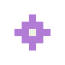
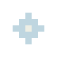
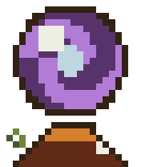
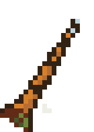
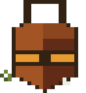
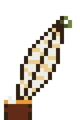
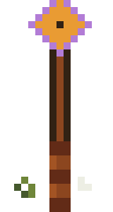

1. Tool hotbar — real item art, not emoji
Every slot now shows the actual tool: the opener reuses the existing key_256.webp (already in the right style), the other five are new pixel-map icons run through the same soften() pass as wizard_tower/character_idle so they land in the same soft-rendered family. Flat rounded slot, selected = gold ring + lift, no wood texture anywhere.
2. Spyglass file list — lens vignette
A soft dark vignette at the edges plus a diagonal sheen sweeping across every ~3s — reads as looking through a scope, distinct from every other panel's flat interior.
3. Crystal orb search — violet/cyan swirling mist
A slowly rotating violet/cyan conic-gradient mist behind the modal, plus drifting sparkle particles (the same ui_sparkle_*.png asset, three colors, reused at different positions/sizes) — the most overtly "magical" of the five tool screens.


4. Bag tray — open satchel interior
A warm brown radial vignette with a dashed "stitched seam" inside the panel edge, like looking into an open pouch. Slots keep the flat pill shape; a pasteable slot gets a gold ring instead of a hairline border swap.
5. Editor frame (quill) — ink & glyph shimmer
Small code-glyph characters ({ } % λ) drift upward and fade near the top of the panel, and a soft ink blot sits behind the plaque corner. Buttons are flat rounded rectangles now (green = save, pink = close), not wax seals.
6. Encounter banner & victory toast — flat notched ribbon
A flat clip-path ribbon (pink for encounter/error, green for victory) instead of a raster wax/wood asset — reads clean at any size and costs nothing to recolor per-state.
TypeError: cannot read property 'water' of undefined
All bugs fixed in this world.
7. Wand / run parchment — rune scroll
Two counter-rotating dashed rune rings (violet + cyan) behind a flat panel — reads as an active spell circle rather than a literal unrolling scroll (v1's wood-roller take is dropped along with the wood).
> watered
> done
8–10. Monster counter, settings corner, controls card
Same flat panel/pill chrome as everywhere else — no new frame kind needed for HUD chrome.
11. Scene transition concept (unchanged direction — kept from v1)
Three static stills, recolored to the new palette. Page-turn (~420ms): a diagonal wipe on cluster change. Scroll-unroll (~340ms): panel-open animation for entering a file/editor. Vignette iris (~260ms, linear): circular open/close for encounter start/end — cheapest, degrades to a plain fade under reduced motion.
Item icon art (crisp vs. soft)
The five new tool icons, crisp pixel map vs. the soften()-passed version actually used in the hotbar above — same technique as wizard_tower/character_idle/ghost, so these read as the same family as the existing recovered originals rather than new bolted-on art.




